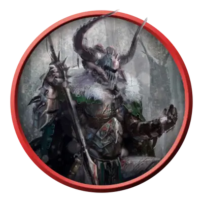

Вампир-страж
Vampire Warden
Средняя Нежить, Нейтральная Злая

Класс Защиты 18 Инициатива +6 (16)
Хиты 190 (21к8 + 96)
Скорость 30 футов
| мод | спас | ||
|---|---|---|---|
| СИЛ | 21 | +5 | +5 |
| ЛОВ | 15 | +2 | +2 |
| ТЕЛ | 18 | +4 | +8 |
| мод | спас | ||
|---|---|---|---|
| ИНТ | 10 | +0 | +0 |
| МДР | 14 | +2 | +6 |
| ХАР | 17 | +3 | +3 |
Сопротивление урону Некротический
Иммунитеты Испуганный, Истощение
Чувства Тёмное зрение 120 футов, пассивное Восприятие 20
Языки Общий
Опасность 10 (5 900 опыта; БВ +4)
Особенности
Сопротивление магии. Вампир совершает с Преимуществом спасброски от заклинаний и прочих магических эффектов.
Слабости вампира. Вампир обладает следующими слабостями:
Запрет. Вампир не может войти в жилище без приглашения одного из обитателей.
Текущая вода. Вампир получает 20 урона Кислотой, если заканчивает свой ход в текущей воде.
Кол в сердце. Если оружие, наносящее Колющий урон, вонзить в сердце вампира, пока он находится в своём месте отдыха и имеет состояние Недееспособный, он становится Парализован до тех пор, пока оружие не будет вынуто.
Солнечный свет. Вампир получает 20 урона Излучением, если начинает свой ход на солнечном свету. Пока вампир на солнечном свету, он получает Помеху к броскам атаки и проверкам характеристик.
Неподвижное восстановление. Если Хиты вампира опускаются до 0 и у него нет состояния Окаменевший, он превращается в камень, восстанавливая 50 Хитов и становясь Окаменевшим на 1 час.
Действия
Мультиатака. Вампир совершает две атаки Когтями и использует Укус или Приказ стража.
Когти. Бросок рукопашной атаки: +9, досягаемость 5 фт. Попадание: 14 (2к8 + 5) Рубящего урона плюс 7 (2к6) Некротического урона. Если цель — существо Большого размера или меньше, она становится Схвачена (Сл освобождения от захвата 16) одной из двух рук.
Укус. Спасбросок Телосложения: Сл 16, одно согласное или Схваченное или Недееспособное или Опутанное существо в пределах 5 футов. Провал: 7 (1к4 + 5) Колющего урона плюс 7 (2к6) Некротического урона. Максимум Хитов цели снижается на число, равное полученному Некротическому урону, а вампир восстанавливает такое же количество Хитов.
Приказ стража. Вампир сотворяет Принуждение, не требуя компонентов (заклинательная характеристика — Харизма, Сл спасброска заклинаний 15).
Реакции
Непробиваемая плоть. Условие: По вампиру попадает рукопашной атакой видимое им существо. Эффект: Вампир снижает получаемый от атаки урон на 11 (2к6 + 4).
Бонус мастерства +4
Среда обитания Город, Подземье
Сокровища Любые
Вампиры
Пьющие кровь владыки ночи
Вампиры скрывают свою проклятую бессмертную природу и выдают себя за живых, чтобы питаться их кровью. Самые младшие и кровожадные из них часто попадают в рабство к своим создателям, а невероятно хитрые и древние вампиры веками наслаждаются сверхъестественной властью над силами ночи.
Днём бессмертные создания скрываются в своих местах отдыха, недоступные для врагов и палящих солнечных лучей. Совершите бросок по таблице «Место отдыха вампира» для вдохновения или выберите сами мрачное место упокоения вампира.
Место отдыха вампира
| 1к6 | Место отдыха вампира находится… |
| 1 | Среди корней мёртвого дерева. |
| 2 | На дне затхлого пруда. |
| 3 | В гробу, наполненном могильной землёй. |
| 4 | В огромном сосуде с кровью или уксусом. |
| 5 | В недоступном для Гуманоидов пространстве. |
| 6 | Внутри скульптуры или комплекта доспехов. |
Вампирам нужны надёжные стражи для своих убежищ, прислужников и сокровищ. Как-никак, их фамильяры долго не живут, а спя или пресмыкаясь, не так внимательны и осмотрительны. Порабощённые чудовища зачастую слишком непредсказуемы или попросту ненадёжны. Чтобы защитить свои логова, некоторые вампиры создают более стойких порождений — вампиров-стражей. С виду они такие же бледнокожие, как и большинство вампиров, но чудовищным напряжением воли они способны выдерживать удары, которые сразили бы любого другого. В миг, когда обычного вампира уже бы уничтожили, вампир-страж обращается в камень, исцеляет себя и вновь готов служить.